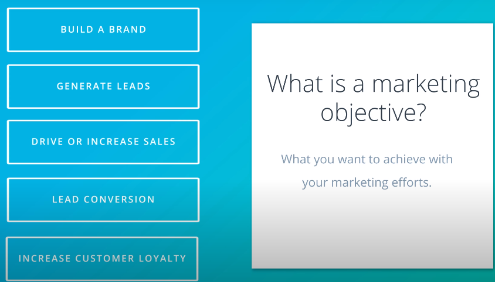
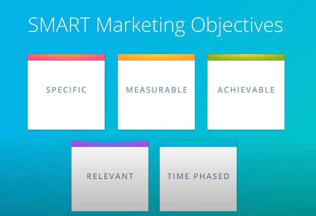
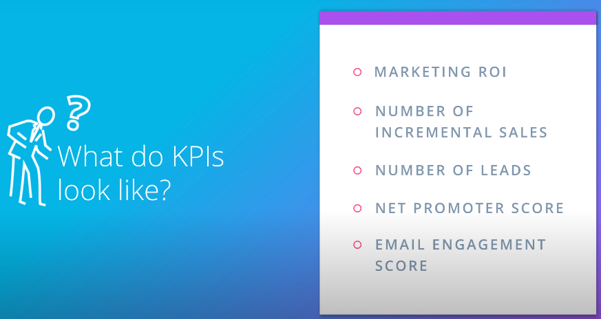
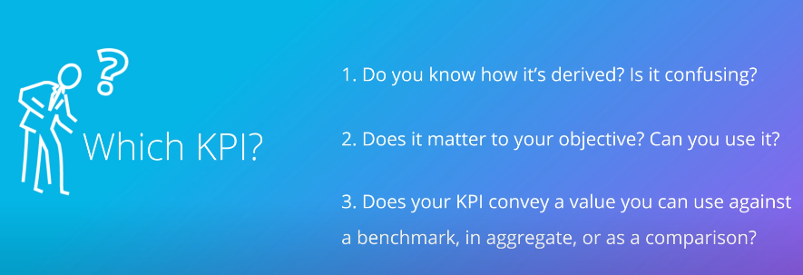
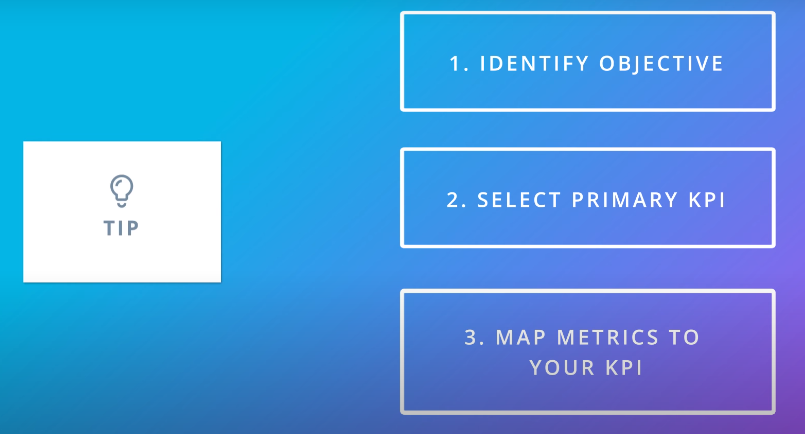
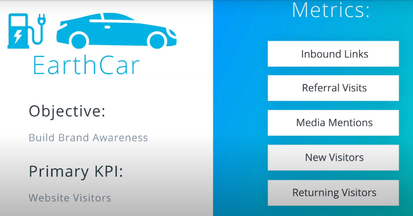

Digital Marketing Map: Why?
-->If you don't know where you're going you'll never get there.
What is a marketing objective?
-->What you want to achieve with your marketing efforts


------------------------------------------------------------------------------------
Key Performance Indicators(KPI)
Marketing KPIs are what tie marketing activities to your marketing objectives, They can help highlight gaps and perception in performance,flag opportunities or challenges and help you adjust strategies as needed



--------------------------------------------------------------------------------
Metrics and KPIs

Metrics
A metric is a measurable unit. It’s often expressed as a number.
The type of metric you use will depend on your marketing campaign and where it is deployed.
Here is a list of common metrics in digital marketing:
- CPM - cost per mille or cost per thousand
- CTR - click-through rate
- CPC - cost per click
- CPA - cost per acquisition
- CPL - cost per lead
- CR - conversion rate
- ROI - return on investment
- CLTV - customer lifetime value
- VTR - view through rate
------------------------------------------------------------------------------------